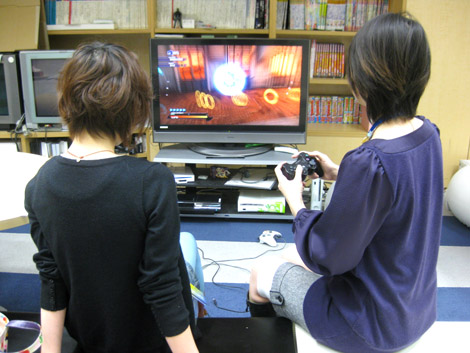
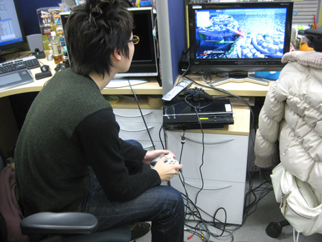
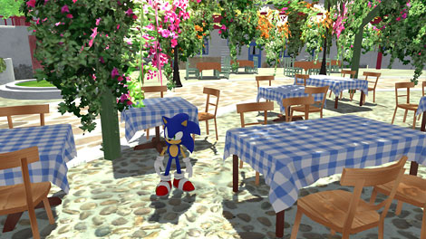
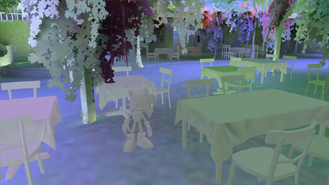
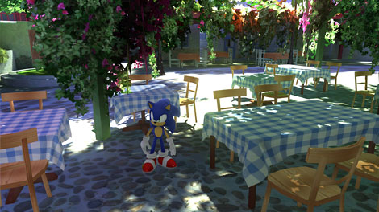

『GIによる美しい背景♪ ところでGIって何ですか？』
2009年02月10日
『SWA』PS3/Xbox360版発売まで2週間を切った、2月某日の昼下がり。
マツバラとヨシノの2人は部署の歓談スペース「チャオガーデン」で
PS3版『SWA』で遊んでいた……

くぬっ！ ふんっ！
……よし、コンボ出た！
やったー！
Sランク！
さっきのコンボ、何？
見たことない。
ええっ！ あれ強いのに！
コンボ数多いから、
見たことないのもチラホラ。
仕方ないな、教えてあげるよ。
こうやってー空中に打ち上げてー……
……ぐぅ。
寝るなっ！
しかし、本当にキレイだね、背景。
友達にXbox360の体験版やらせてみたら、
「すっごいリアル」って感動してた。
それはもちろん、
GIがあるからね！
うん。『SWA』PS3/Xbox360版の背景は
GIっていう技法が使われてるからものすごくキレイっていうよね。
……で、「GI」って何だかわかる？
えっ！
……「が」んばって、「い」いかんじに……の、略？
…………。
デザインチーム背景班リーダーの
米津さんに話を聞きにいこうか……。
そして、2人で米津さん席に移動。

デザインチーム背景班リーダーの、米津さん
米津さん、いきなりですが、
「GI」って何ですか？
教えてください！
どうして『SWA』PS3/Xbox360版がこんなにキレイなのか
がんばっていいかんじに勉強したいです！
米津 ：っていうか、知らなかったんだ(笑)
すっごいキレイなのは解るんですけど
何が違うからあんなリアルなのか
ちょっと解らなくて……
米津 ：「GI」っていうのは
「グローバル・イルミネーション」の略で、
よりリアルな陰影を実現するための技術だよ。
…………
米津 ：今までのゲームは、空間に対して１方向の光しか表現しきれなかった。
だから、背景を精密にきれいに作っても、
なんだか陰影が単調で無機質だったんだ。
…………
米津 ：でも現実世界は違う。
光はモノに当たればわずかに照りかえって他のモノに影響するし、
赤いモノのそばに置かれたモノには、わずかに赤がうつる。
そういう複雑な光まで計算して、リアルな陰影を……
……ん？ どうしたの？ 2人とも。
もうすこし、
カンタンにお願いします！
で、結局何なんですか？
米津 ：あのなあ、お前ら(笑)
……そうだな～。
現実世界の複雑な光や陰影を、再現したんだよ。
なるほど！ 理解しました！
米津 ：本当か……？
なんか凄く不安だから、実際見せるよ。

米津 ：これが、従来のクオリティ。影が単調だろ？
ここに……

米津 ：この、GIデータを合成すると……

米津 ：こうなるんだ。
本当に、全然違いますね！
陰影パネエ！
GIまじパネエ！
他に、「GI」について
ハミだすことなどありませんか？
米津 ：実は、この「GI」って技法は
CGや映画業界で使われてる技法でね、
ゲームで使用するのは極めて珍しいチャレンジなんだ。
えっ！ そうだったんですか！
米津 ：それも知らなかったのかよ！(笑)
まあ、めちゃめちゃ凄いことなんだ。
初挑戦！ですか……
じゃあ、きっと苦労もひとしおですね！
そういえば、
同期のデザインチームの女の子が深夜に
「GI処理が終わらない……」って泣いてたの見たことあります。
米津 ：高度な技術を使ってるから、
計算量が半端なくてね……。
「GI」処理専用のハイスペックマシンを6台用意して
片っ端から計算しても追いつかなかった……。
他のPCから計算力を借りて力をあわせて計算しても
1回のGI処理に半日かかったよ。
そ、それは……
処理した結果、不具合が見つかったり
要調整になったら？
米津 ：やりなおし(笑)
「GI」は、膨大な計算にかかる時間との戦いだったなあ。
それから、また小難しい話になるけど、
通常作るデザインデータとGIデータ2種類用意しなきゃいけないから
作業量が2倍になったりね……。
まさに！ デザインチームのスタッフの
汗と涙と努力の結晶ですね！！
米津 ：まさに、ね！
でもそのおかげで、
本当にきれいですよね。
米津さんは、どのステージが一番お気に入りですか？
米津 ：陰影が美しいという点では、「アポトス」かな。
では米津さん、こちらのブログをご覧の皆さまに
なにかヒトコトお願いします！
米津 ：うーん。
「スッゲーキレイだから、見てくれ！」に尽きるな。
ブログには、いいかんじに書き換えて載せといて(笑)
はい、わかりました。
(そのままハミだすけど)
米津さん、ありがとうございました！
いや～、今回は「GI」について
がっつり勉強しちゃったね。
うん！ がんばって、いいかんじに……
それは、もういいから。
日時: 2009年02月10日 16:00 | パーマリンク


 ソニックを愛する、元気な『SWA』2年目プランナー。
ソニックを愛する、元気な『SWA』2年目プランナー。 マイペースな『SWA』2年目プランナー。
マイペースな『SWA』2年目プランナー。
 ご意見・ご要望はこちら
ご意見・ご要望はこちら RSS
RSS